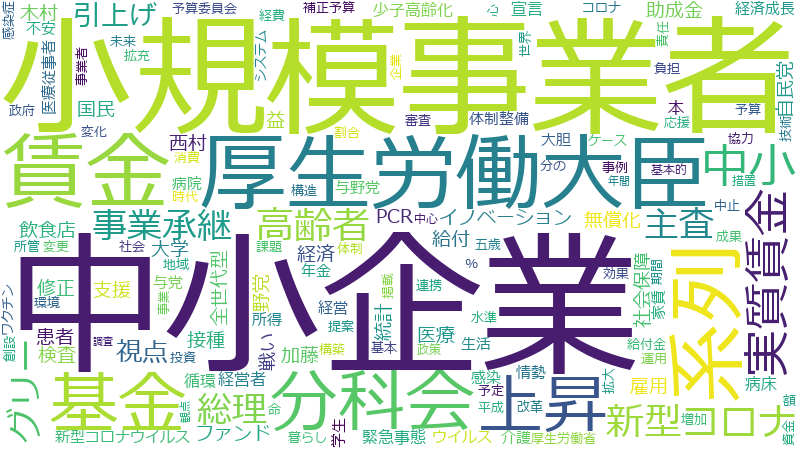

後藤茂之

支援 、感染症 、接種 、厚生労働省 、地域 、体制 、ワクチン 、医療 、国民 、事業者 、新型コロナ 、政府 、令和 、統括 、庁 、機能 、承認 、情報 、事業 、子供 、フリーランス 、連携 、措置 、観点 、都道府県 、課題 、医療機関 、自治体 、仕組み 、企業 、整備 、規定 、推進 、雇用 、設置 、雇用保険 、強化 、患者 、効果 、危機管理 、感染 、施設 、専門家 、取引 、健康 、特定 、危機 、政策 、事務 、緊急 、審議会 、給付 、労働者 、安全性 、労働 、社会 、経済 、運用 、有効性 、周知 、医薬品 、負担 、データ 、オミクロン 、契約 、業務 、新型インフルエンザ 、司令塔 、症状 、株 、発注 、診療 、迅速 、児童 、総理大臣 、在り方 、予防 、検査 、新型コロナウイルス 、家庭 、知見 、賃金 、使用 、内閣 、運営 、賃上げ 、相談 、サービス 、構築 、高齢者 、利用 、拡大 、組織 、市町村 、見直し 、内閣官房 、調査 、施行 、改善 、成長
接種 、感染症 、支援 、統括 、ワクチン 、フリーランス 、厚生労働省 、雇用保険 、新型コロナ 、医療 、承認 、庁 、医療機関 、体制 、事業者 、危機管理 、子供 、地域 、新型インフルエンザ 、患者 、医薬品 、国民 、機能 、有効性 、感染 、都道府県 、令和 、政府 、雇用 、オミクロン 、給付 、労働者 、発注 、症状 、一時保護 、情報 、司令塔 、自治体 、事業 、児童相談所 、取引 、審議会 、診療 、仕組み 、措置 、業務委託 、安全性 、健康 、労働 、危機 、株 、連携 、企業 、事務 、児童 、規定 、緊急 、専門家 、賃上げ 、観点 、設置 、課題 、予防 、推進 、効果 、整備 、施設 、受託 、賃金 、総合調整 、保険料 、ワクチン接種 、契約 、内閣官房 、特定 、児童福祉 、周知 、失業 、労働政策 、特措法 、強化 、検査 、内閣 、行動計画 、医療提供 、新型コロナウイルス 、マスク 、医師 、国庫負担 、家庭 、高齢者 、政策 、知見 、迅速 、訓練 、経済 、データ 、感染症法 、運用 、科学的知見
接種
| 言及回数 | 663回 |
| 言及発言者数（参考人を含む） | 320人 |
感染症
| 言及回数 | 924回 |
| 言及発言者数（参考人を含む） | 817人 |
支援
| 言及回数 | 1164回 |
| 言及発言者数（参考人を含む） | 1542人 |
統括
| 言及回数 | 446回 |
| 言及発言者数（参考人を含む） | 220人 |
ワクチン
| 言及回数 | 532回 |
| 言及発言者数（参考人を含む） | 438人 |
フリーランス
| 言及回数 | 380回 |
| 言及発言者数（参考人を含む） | 169人 |
厚生労働省
| 言及回数 | 642回 |
| 言及発言者数（参考人を含む） | 792人 |
雇用保険
| 言及回数 | 286回 |
| 言及発言者数（参考人を含む） | 121人 |
新型コロナ
| 言及回数 | 470回 |
| 言及発言者数（参考人を含む） | 653人 |
医療
| 言及回数 | 501回 |
| 言及発言者数（参考人を含む） | 770人 |
承認
| 言及回数 | 410回 |
| 言及発言者数（参考人を含む） | 531人 |
庁
| 言及回数 | 432回 |
| 言及発言者数（参考人を含む） | 646人 |
医療機関
| 言及回数 | 339回 |
| 言及発言者数（参考人を含む） | 440人 |
体制
| 言及回数 | 533回 |
| 言及発言者数（参考人を含む） | 1243人 |
事業者
| 言及回数 | 486回 |
| 言及発言者数（参考人を含む） | 1086人 |
危機管理
| 言及回数 | 277回 |
| 言及発言者数（参考人を含む） | 326人 |
子供
| 言及回数 | 394回 |
| 言及発言者数（参考人を含む） | 839人 |
地域
| 言及回数 | 542回 |
| 言及発言者数（参考人を含む） | 1422人 |
新型インフルエンザ
| 言及回数 | 201回 |
| 言及発言者数（参考人を含む） | 147人 |
患者
| 言及回数 | 278回 |
| 言及発言者数（参考人を含む） | 422人 |
医薬品
| 言及回数 | 220回 |
| 言及発言者数（参考人を含む） | 225人 |
国民
| 言及回数 | 498回 |
| 言及発言者数（参考人を含む） | 1366人 |
機能
| 言及回数 | 428回 |
| 言及発言者数（参考人を含む） | 1169人 |
有効性
| 言及回数 | 222回 |
| 言及発言者数（参考人を含む） | 274人 |
感染
| 言及回数 | 271回 |
| 言及発言者数（参考人を含む） | 498人 |
都道府県
| 言及回数 | 349回 |
| 言及発言者数（参考人を含む） | 879人 |
令和
| 言及回数 | 452回 |
| 言及発言者数（参考人を含む） | 1398人 |
政府
| 言及回数 | 456回 |
| 言及発言者数（参考人を含む） | 1432人 |
雇用
| 言及回数 | 300回 |
| 言及発言者数（参考人を含む） | 703人 |
オミクロン
| 言及回数 | 210回 |
| 言及発言者数（参考人を含む） | 290人 |
給付
| 言及回数 | 245回 |
| 言及発言者数（参考人を含む） | 471人 |
労働者
| 言及回数 | 239回 |
| 言及発言者数（参考人を含む） | 445人 |
発注
| 言及回数 | 192回 |
| 言及発言者数（参考人を含む） | 250人 |
症状
| 言及回数 | 196回 |
| 言及発言者数（参考人を含む） | 272人 |
一時保護
| 言及回数 | 129回 |
| 言及発言者数（参考人を含む） | 60人 |
情報
| 言及回数 | 408回 |
| 言及発言者数（参考人を含む） | 1374人 |
司令塔
| 言及回数 | 196回 |
| 言及発言者数（参考人を含む） | 298人 |
自治体
| 言及回数 | 338回 |
| 言及発言者数（参考人を含む） | 1052人 |
事業
| 言及回数 | 395回 |
| 言及発言者数（参考人を含む） | 1357人 |
児童相談所
| 言及回数 | 157回 |
| 言及発言者数（参考人を含む） | 157人 |
取引
| 言及回数 | 256回 |
| 言及発言者数（参考人を含む） | 631人 |
審議会
| 言及回数 | 245回 |
| 言及発言者数（参考人を含む） | 580人 |
診療
| 言及回数 | 192回 |
| 言及発言者数（参考人を含む） | 313人 |
仕組み
| 言及回数 | 333回 |
| 言及発言者数（参考人を含む） | 1121人 |
措置
| 言及回数 | 368回 |
| 言及発言者数（参考人を含む） | 1325人 |
業務委託
| 言及回数 | 136回 |
| 言及発言者数（参考人を含む） | 111人 |
安全性
| 言及回数 | 236回 |
| 言及発言者数（参考人を含む） | 603人 |
健康
| 言及回数 | 252回 |
| 言及発言者数（参考人を含む） | 705人 |
労働
| 言及回数 | 233回 |
| 言及発言者数（参考人を含む） | 598人 |
危機
| 言及回数 | 249回 |
| 言及発言者数（参考人を含む） | 691人 |
株
| 言及回数 | 194回 |
| 言及発言者数（参考人を含む） | 388人 |
連携
| 言及回数 | 378回 |
| 言及発言者数（参考人を含む） | 1460人 |
企業
| 言及回数 | 324回 |
| 言及発言者数（参考人を含む） | 1208人 |
事務
| 言及回数 | 247回 |
| 言及発言者数（参考人を含む） | 759人 |
児童
| 言及回数 | 191回 |
| 言及発言者数（参考人を含む） | 426人 |
規定
| 言及回数 | 318回 |
| 言及発言者数（参考人を含む） | 1210人 |
緊急
| 言及回数 | 247回 |
| 言及発言者数（参考人を含む） | 788人 |
専門家
| 言及回数 | 257回 |
| 言及発言者数（参考人を含む） | 865人 |
賃上げ
| 言及回数 | 174回 |
| 言及発言者数（参考人を含む） | 365人 |
観点
| 言及回数 | 351回 |
| 言及発言者数（参考人を含む） | 1477人 |
設置
| 言及回数 | 298回 |
| 言及発言者数（参考人を含む） | 1204人 |
課題
| 言及回数 | 340回 |
| 言及発言者数（参考人を含む） | 1478人 |
予防
| 言及回数 | 189回 |
| 言及発言者数（参考人を含む） | 508人 |
推進
| 言及回数 | 314回 |
| 言及発言者数（参考人を含む） | 1339人 |
効果
| 言及回数 | 277回 |
| 言及発言者数（参考人を含む） | 1138人 |
整備
| 言及回数 | 320回 |
| 言及発言者数（参考人を含む） | 1413人 |
施設
| 言及回数 | 265回 |
| 言及発言者数（参考人を含む） | 1070人 |
受託
| 言及回数 | 125回 |
| 言及発言者数（参考人を含む） | 167人 |
賃金
| 言及回数 | 180回 |
| 言及発言者数（参考人を含む） | 497人 |
総合調整
| 言及回数 | 119回 |
| 言及発言者数（参考人を含む） | 143人 |
保険料
| 言及回数 | 139回 |
| 言及発言者数（参考人を含む） | 261人 |
ワクチン接種
| 言及回数 | 155回 |
| 言及発言者数（参考人を含む） | 359人 |
契約
| 言及回数 | 210回 |
| 言及発言者数（参考人を含む） | 749人 |
内閣官房
| 言及回数 | 164回 |
| 言及発言者数（参考人を含む） | 426人 |
特定
| 言及回数 | 251回 |
| 言及発言者数（参考人を含む） | 1056人 |
児童福祉
| 言及回数 | 109回 |
| 言及発言者数（参考人を含む） | 120人 |
周知
| 言及回数 | 221回 |
| 言及発言者数（参考人を含む） | 864人 |
失業
| 言及回数 | 118回 |
| 言及発言者数（参考人を含む） | 168人 |
労働政策
| 言及回数 | 93回 |
| 言及発言者数（参考人を含む） | 66人 |
特措法
| 言及回数 | 129回 |
| 言及発言者数（参考人を含む） | 230人 |
強化
| 言及回数 | 285回 |
| 言及発言者数（参考人を含む） | 1335人 |
検査
| 言及回数 | 189回 |
| 言及発言者数（参考人を含む） | 667人 |
内閣
| 言及回数 | 177回 |
| 言及発言者数（参考人を含む） | 579人 |
行動計画
| 言及回数 | 109回 |
| 言及発言者数（参考人を含む） | 145人 |
医療提供
| 言及回数 | 116回 |
| 言及発言者数（参考人を含む） | 186人 |
新型コロナウイルス
| 言及回数 | 184回 |
| 言及発言者数（参考人を含む） | 659人 |
マスク
| 言及回数 | 133回 |
| 言及発言者数（参考人を含む） | 294人 |
医師
| 言及回数 | 145回 |
| 言及発言者数（参考人を含む） | 389人 |
国庫負担
| 言及回数 | 101回 |
| 言及発言者数（参考人を含む） | 122人 |
家庭
| 言及回数 | 183回 |
| 言及発言者数（参考人を含む） | 704人 |
高齢者
| 言及回数 | 171回 |
| 言及発言者数（参考人を含む） | 611人 |
政策
| 言及回数 | 248回 |
| 言及発言者数（参考人を含む） | 1225人 |
知見
| 言及回数 | 182回 |
| 言及発言者数（参考人を含む） | 731人 |
迅速
| 言及回数 | 192回 |
| 言及発言者数（参考人を含む） | 822人 |
訓練
| 言及回数 | 147回 |
| 言及発言者数（参考人を含む） | 457人 |
経済
| 言及回数 | 229回 |
| 言及発言者数（参考人を含む） | 1151人 |
データ
| 言及回数 | 212回 |
| 言及発言者数（参考人を含む） | 1014人 |
感染症法
| 言及回数 | 105回 |
| 言及発言者数（参考人を含む） | 177人 |
運用
| 言及回数 | 225回 |
| 言及発言者数（参考人を含む） | 1139人 |
科学的知見
| 言及回数 | 103回 |
| 言及発言者数（参考人を含む） | 178人 |
支援
| 言及回数 | 1164回 |
| 言及発言者数（参考人を含む） | 1542人 |
感染症
| 言及回数 | 924回 |
| 言及発言者数（参考人を含む） | 817人 |
接種
| 言及回数 | 663回 |
| 言及発言者数（参考人を含む） | 320人 |
厚生労働省
| 言及回数 | 642回 |
| 言及発言者数（参考人を含む） | 792人 |
地域
| 言及回数 | 542回 |
| 言及発言者数（参考人を含む） | 1422人 |
体制
| 言及回数 | 533回 |
| 言及発言者数（参考人を含む） | 1243人 |
ワクチン
| 言及回数 | 532回 |
| 言及発言者数（参考人を含む） | 438人 |
医療
| 言及回数 | 501回 |
| 言及発言者数（参考人を含む） | 770人 |
国民
| 言及回数 | 498回 |
| 言及発言者数（参考人を含む） | 1366人 |
事業者
| 言及回数 | 486回 |
| 言及発言者数（参考人を含む） | 1086人 |
新型コロナ
| 言及回数 | 470回 |
| 言及発言者数（参考人を含む） | 653人 |
政府
| 言及回数 | 456回 |
| 言及発言者数（参考人を含む） | 1432人 |
令和
| 言及回数 | 452回 |
| 言及発言者数（参考人を含む） | 1398人 |
統括
| 言及回数 | 446回 |
| 言及発言者数（参考人を含む） | 220人 |
庁
| 言及回数 | 432回 |
| 言及発言者数（参考人を含む） | 646人 |
機能
| 言及回数 | 428回 |
| 言及発言者数（参考人を含む） | 1169人 |
承認
| 言及回数 | 410回 |
| 言及発言者数（参考人を含む） | 531人 |
情報
| 言及回数 | 408回 |
| 言及発言者数（参考人を含む） | 1374人 |
事業
| 言及回数 | 395回 |
| 言及発言者数（参考人を含む） | 1357人 |
子供
| 言及回数 | 394回 |
| 言及発言者数（参考人を含む） | 839人 |
フリーランス
| 言及回数 | 380回 |
| 言及発言者数（参考人を含む） | 169人 |
連携
| 言及回数 | 378回 |
| 言及発言者数（参考人を含む） | 1460人 |
措置
| 言及回数 | 368回 |
| 言及発言者数（参考人を含む） | 1325人 |
観点
| 言及回数 | 351回 |
| 言及発言者数（参考人を含む） | 1477人 |
都道府県
| 言及回数 | 349回 |
| 言及発言者数（参考人を含む） | 879人 |
課題
| 言及回数 | 340回 |
| 言及発言者数（参考人を含む） | 1478人 |
医療機関
| 言及回数 | 339回 |
| 言及発言者数（参考人を含む） | 440人 |
自治体
| 言及回数 | 338回 |
| 言及発言者数（参考人を含む） | 1052人 |
仕組み
| 言及回数 | 333回 |
| 言及発言者数（参考人を含む） | 1121人 |
企業
| 言及回数 | 324回 |
| 言及発言者数（参考人を含む） | 1208人 |
整備
| 言及回数 | 320回 |
| 言及発言者数（参考人を含む） | 1413人 |
規定
| 言及回数 | 318回 |
| 言及発言者数（参考人を含む） | 1210人 |
推進
| 言及回数 | 314回 |
| 言及発言者数（参考人を含む） | 1339人 |
雇用
| 言及回数 | 300回 |
| 言及発言者数（参考人を含む） | 703人 |
設置
| 言及回数 | 298回 |
| 言及発言者数（参考人を含む） | 1204人 |
雇用保険
| 言及回数 | 286回 |
| 言及発言者数（参考人を含む） | 121人 |
強化
| 言及回数 | 285回 |
| 言及発言者数（参考人を含む） | 1335人 |
患者
| 言及回数 | 278回 |
| 言及発言者数（参考人を含む） | 422人 |
効果
| 言及回数 | 277回 |
| 言及発言者数（参考人を含む） | 1138人 |
危機管理
| 言及回数 | 277回 |
| 言及発言者数（参考人を含む） | 326人 |
感染
| 言及回数 | 271回 |
| 言及発言者数（参考人を含む） | 498人 |
施設
| 言及回数 | 265回 |
| 言及発言者数（参考人を含む） | 1070人 |
専門家
| 言及回数 | 257回 |
| 言及発言者数（参考人を含む） | 865人 |
取引
| 言及回数 | 256回 |
| 言及発言者数（参考人を含む） | 631人 |
健康
| 言及回数 | 252回 |
| 言及発言者数（参考人を含む） | 705人 |
特定
| 言及回数 | 251回 |
| 言及発言者数（参考人を含む） | 1056人 |
危機
| 言及回数 | 249回 |
| 言及発言者数（参考人を含む） | 691人 |
政策
| 言及回数 | 248回 |
| 言及発言者数（参考人を含む） | 1225人 |
事務
| 言及回数 | 247回 |
| 言及発言者数（参考人を含む） | 759人 |
緊急
| 言及回数 | 247回 |
| 言及発言者数（参考人を含む） | 788人 |
審議会
| 言及回数 | 245回 |
| 言及発言者数（参考人を含む） | 580人 |
給付
| 言及回数 | 245回 |
| 言及発言者数（参考人を含む） | 471人 |
労働者
| 言及回数 | 239回 |
| 言及発言者数（参考人を含む） | 445人 |
安全性
| 言及回数 | 236回 |
| 言及発言者数（参考人を含む） | 603人 |
労働
| 言及回数 | 233回 |
| 言及発言者数（参考人を含む） | 598人 |
社会
| 言及回数 | 232回 |
| 言及発言者数（参考人を含む） | 1263人 |
経済
| 言及回数 | 229回 |
| 言及発言者数（参考人を含む） | 1151人 |
運用
| 言及回数 | 225回 |
| 言及発言者数（参考人を含む） | 1139人 |
有効性
| 言及回数 | 222回 |
| 言及発言者数（参考人を含む） | 274人 |
周知
| 言及回数 | 221回 |
| 言及発言者数（参考人を含む） | 864人 |
医薬品
| 言及回数 | 220回 |
| 言及発言者数（参考人を含む） | 225人 |
負担
| 言及回数 | 220回 |
| 言及発言者数（参考人を含む） | 1132人 |
データ
| 言及回数 | 212回 |
| 言及発言者数（参考人を含む） | 1014人 |
オミクロン
| 言及回数 | 210回 |
| 言及発言者数（参考人を含む） | 290人 |
契約
| 言及回数 | 210回 |
| 言及発言者数（参考人を含む） | 749人 |
業務
| 言及回数 | 207回 |
| 言及発言者数（参考人を含む） | 1038人 |
新型インフルエンザ
| 言及回数 | 201回 |
| 言及発言者数（参考人を含む） | 147人 |
司令塔
| 言及回数 | 196回 |
| 言及発言者数（参考人を含む） | 298人 |
症状
| 言及回数 | 196回 |
| 言及発言者数（参考人を含む） | 272人 |
株
| 言及回数 | 194回 |
| 言及発言者数（参考人を含む） | 388人 |
発注
| 言及回数 | 192回 |
| 言及発言者数（参考人を含む） | 250人 |
診療
| 言及回数 | 192回 |
| 言及発言者数（参考人を含む） | 313人 |
迅速
| 言及回数 | 192回 |
| 言及発言者数（参考人を含む） | 822人 |
児童
| 言及回数 | 191回 |
| 言及発言者数（参考人を含む） | 426人 |
総理大臣
| 言及回数 | 191回 |
| 言及発言者数（参考人を含む） | 947人 |
在り方
| 言及回数 | 190回 |
| 言及発言者数（参考人を含む） | 1156人 |
予防
| 言及回数 | 189回 |
| 言及発言者数（参考人を含む） | 508人 |
検査
| 言及回数 | 189回 |
| 言及発言者数（参考人を含む） | 667人 |
新型コロナウイルス
| 言及回数 | 184回 |
| 言及発言者数（参考人を含む） | 659人 |
家庭
| 言及回数 | 183回 |
| 言及発言者数（参考人を含む） | 704人 |
知見
| 言及回数 | 182回 |
| 言及発言者数（参考人を含む） | 731人 |
賃金
| 言及回数 | 180回 |
| 言及発言者数（参考人を含む） | 497人 |
使用
| 言及回数 | 178回 |
| 言及発言者数（参考人を含む） | 986人 |
内閣
| 言及回数 | 177回 |
| 言及発言者数（参考人を含む） | 579人 |
運営
| 言及回数 | 176回 |
| 言及発言者数（参考人を含む） | 995人 |
賃上げ
| 言及回数 | 174回 |
| 言及発言者数（参考人を含む） | 365人 |
相談
| 言及回数 | 173回 |
| 言及発言者数（参考人を含む） | 935人 |
サービス
| 言及回数 | 172回 |
| 言及発言者数（参考人を含む） | 862人 |
構築
| 言及回数 | 171回 |
| 言及発言者数（参考人を含む） | 1071人 |
高齢者
| 言及回数 | 171回 |
| 言及発言者数（参考人を含む） | 611人 |
利用
| 言及回数 | 170回 |
| 言及発言者数（参考人を含む） | 1281人 |
拡大
| 言及回数 | 170回 |
| 言及発言者数（参考人を含む） | 1183人 |
組織
| 言及回数 | 167回 |
| 言及発言者数（参考人を含む） | 935人 |
市町村
| 言及回数 | 166回 |
| 言及発言者数（参考人を含む） | 728人 |
見直し
| 言及回数 | 165回 |
| 言及発言者数（参考人を含む） | 1061人 |
内閣官房
| 言及回数 | 164回 |
| 言及発言者数（参考人を含む） | 426人 |
調査
| 言及回数 | 162回 |
| 言及発言者数（参考人を含む） | 1332人 |
施行
| 言及回数 | 161回 |
| 言及発言者数（参考人を含む） | 783人 |
改善
| 言及回数 | 160回 |
| 言及発言者数（参考人を含む） | 1115人 |
成長
| 言及回数 | 158回 |
| 言及発言者数（参考人を含む） | 758人 |